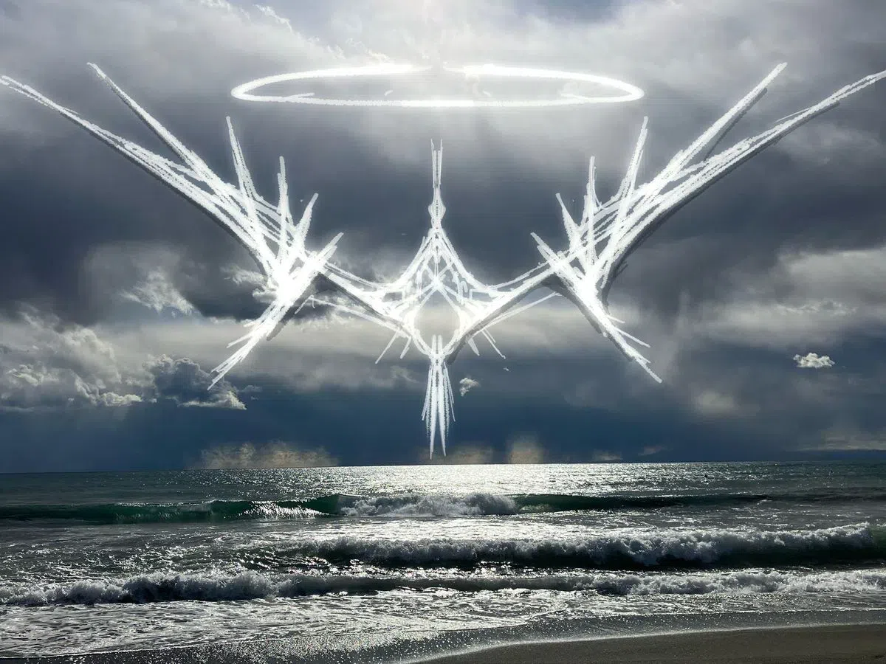

A year and three months. That is what I have lost. I can't remember the things I've done, or experienced in 2024, except for the few projects that surfaced... Even my blog in that year, is dull, monotone and lacks any color or depth. I'm not quite back to my 2023 state in the sense of memory, color, and depth, but I can tell I have more control and I am more articulate. There's definitely more coherence now, too! My self & meta awareness has also grown massively. Hmmm, as I write, I keep getting distracted by heavy footsteps in the other room, the closing and opening of doors, and more. I flinch as they get close, and get relief as they go away. I once had this issue with PTSD before, from before 2015... I 'mastered' it but, it would seem some people have re-opened old wounds in the last couple years... Is that why I can't remember 2024? I don't know. Between the meds I was on in 2024 to apparent scars, I can't tell which had a bigger effect on my memory and cognitive function. Oh well, those 'abusers' are gone now. As with the past, I am once again left with their damage. Was it 2021 or 2022 when he first came into my life? That too I cannot recall... However I remember one night very clearly, and I probably will for the rest of my life: I don't know if it was 2022 or 2023 but I was standing up for my mother, he was pissed at that fact and came into my room by breaking down my door... But for some reason I saw it in my mind that that is what is about to happen, as if I forseen only a glimpse of the near future... It was surreal! Anyway, it happened, he looked at me with, what? Contempt? And maybe rage, I don't know the correct words but it was of "You are below human; Why do you dare stand against me?" As if he was above the average populace... He infact is AVERAGE. But yeah, after than he grabbed me by the neck and well... The Old me wanted to wake but I didn't let it, I was filled with Norepinephrine & Adrenaline. I could taste it, and I could feel my bloodflow throughout my body, as my vision started to darken around the edges. I knew what this coming state meant... It wasn't mere fight or flight, it was something more? Jeez the heavy-footsteps keep getting me distracted... fuck off! I've been in this state 3 times before that I can vividly remember; 2008, 2011, and 2015. All due to extreme abuse. I came close to murder the previous 2 times but I was never in control of this state. I managed to control it this time which was both surprising, and a relief to me. I didn't want to go to prison over some selfish drunk! || I didn't even know what this post was going to be about, I'm just starting to enjoy posting again as I did in 2023 and before! My permanence is slowly returning, I'm slowly getting my full memories and cognition back... I can tell I've improved in some areas, but I'm still insecure about not being perfect in every way still.
